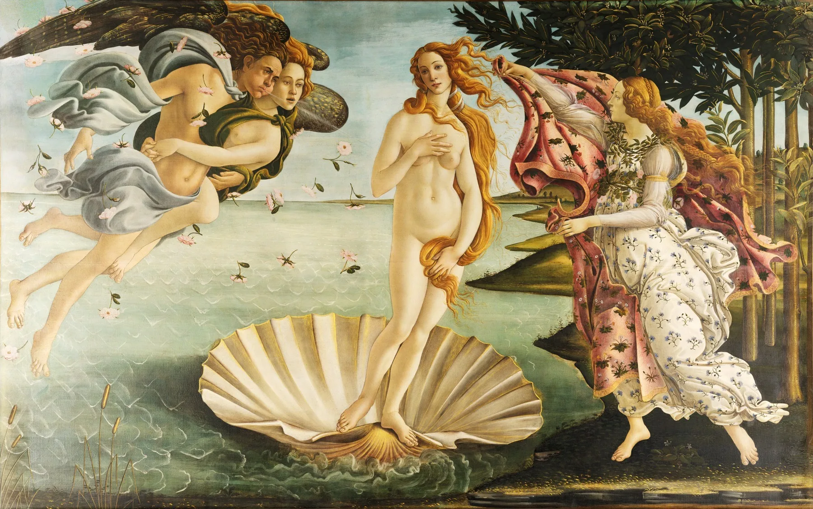
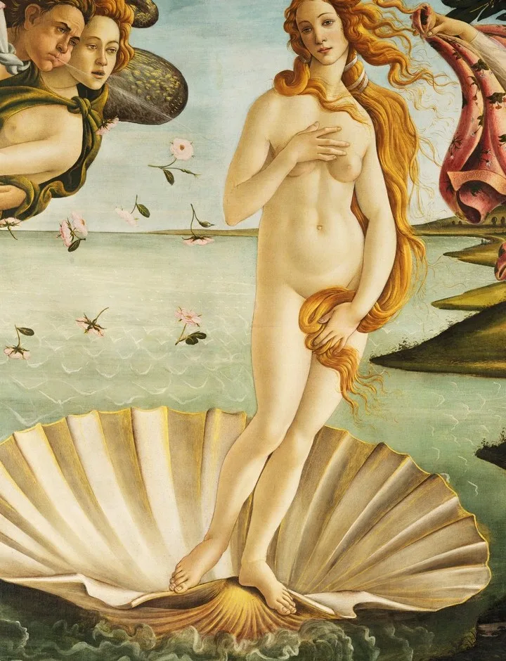
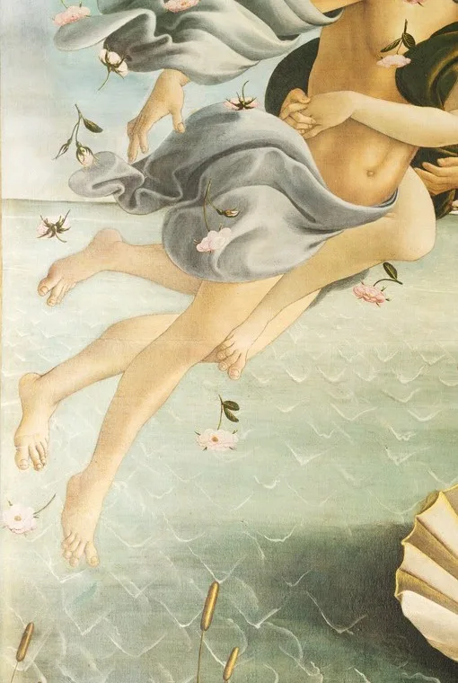
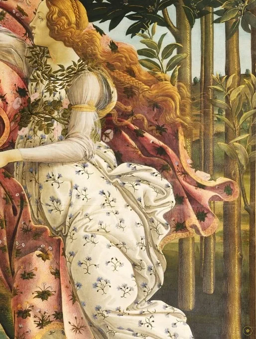
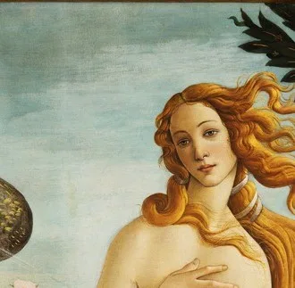
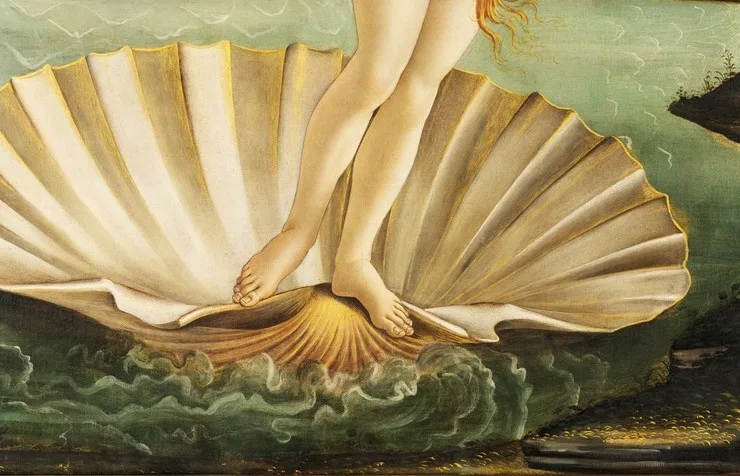
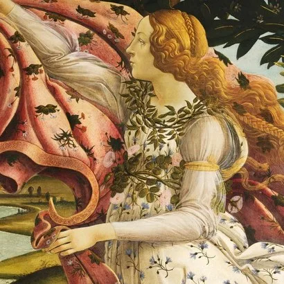
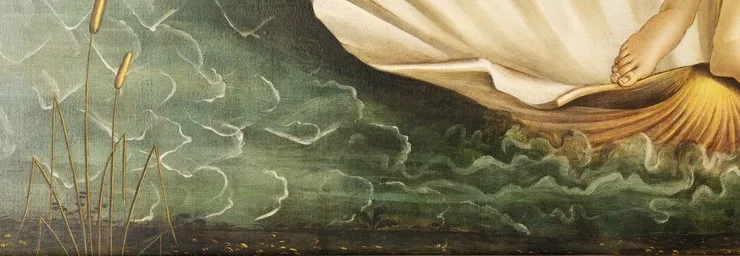
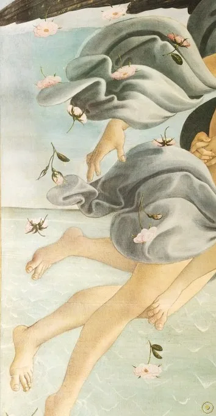

本页面展示的画作包含 艺术人体 / 裸体 内容。所录作品均为美术馆级公有领域馆藏，仅作艺术欣赏与学习之用，不含任何低俗或违规意图。
若您未满 18 周岁，或对此类内容感到不适，请点击「返回画廊」。点击「进入欣赏」即表示您已知悉上述说明，并同意仅作艺术欣赏之用。
一位裸身的女神立在巨贝之上，从海面缓缓漂来；右侧的风神鼓着腮帮把气吹向她，左侧的女神举着花袍等她上岸。波提切利画的并非「诞生」的瞬间，而是「抵达」——维纳斯从海沫里生出之后，正被风送到人间。
它约作于 1484–1486 年，是佛罗伦萨金主美第奇圈子的产物。画布上没有任何基督教符号，满纸都是异教的神话：爱神维纳斯、风神、时序女神与丘比特。
五百年里，它的名声并非与生俱来。在波提切利生前，它不过挂在美第奇的乡间别墅；是十九世纪的拉斐尔前派与唯美主义者，才把它捧成「文艺复兴」的图腾。
这一页，就顺着风的方向，从左岸、海面到巨贝，重新看一遍这场关于美与爱的寓言——以及那条被波提切利奉为至上的轮廓线。
—— 据波利齐亚诺《比武篇》意象与瓦萨里《艺苑名人传》记述（转译）
波提切利画下的，是被风送到岸边的、一具仍带着海气的美。
画面里没有一个人物是凭空想象的：风神、花神、时序女神、盲眼的小爱神，各有来处。点击光点，看维纳斯为何垂眸、贝壳为何那么大、玫瑰为何没有刺。

点击画面中的 ✦ 光点 查看画中细节 · 图片来源：Wikimedia Commons（公有领域）
从美第奇的乡间别墅，到十九世纪的重新发现，再到今天的全球符号——这幅画的命运，比画中任何一位神都更曲折。
约 1484 · 佛罗伦萨
主流假说认为，它是受洛伦佐·迪·皮尔弗朗切斯科·德·美第奇（即「伟大的洛伦佐」的堂弟）委托，为其卡斯特洛别墅所作；与它成对的，是另一幅《春》。
➤1486 前后 · 画室
波提切利用蛋彩（tempera）画在画布而非传统的木板上——在当时颇为少见。他师从利皮、受波拉尤奥洛影响，把「线」推到比体积与透视更高的位置。
➤19 世纪 · 重新发现
它在波提切利生前并不显赫，长期藏于美第奇乡间别墅；直到十九世纪，经拉斐尔前派与唯美主义者的推崇，才被捧成文艺复兴的象征，并于 1815 年前后入藏乌菲齐。

其一 · 文学的底本。学界主流认为，画面的直接灵感来自波利齐亚诺（Poliziano）为美第奇比武写的《比武篇》（Stanze）：诗中已出现「风把维纳斯吹向岸、女神举袍相迎」的意象。画，是诗的图像版。
其二 · 新柏拉图主义的读法。美第奇圈子的哲学（费奇诺等人）把维纳斯分为「尘世之爱」与「神圣之爱」。主流解释据此把此画读为「神圣美的降临」——不过这一读法自二十世纪起也常被提醒：别把后设理论叠得太厚。
其三 · 它会「褪色」。蛋彩画在画布上易剥落、易变淡；今天的画面比当年苍白许多，绿色尤其损失。我们看到的「清冷」，部分是时间而非波提切利原意。
※ 订件人（洛伦佐·迪·皮尔弗朗切斯科）、文学底本（波利齐亚诺）与哲学读法均为学界主流假说，非铁证；「贝壳/玫瑰无刺」等寓意则源自古典文献的传统解释。
把这场神话拆开，每位神都有自己的典故；而真正的主角，是那条贯穿众人的轮廓线。
借自罗马雕像的姿态，把古典的端庄搬进佛罗伦萨。

左侧岸上持花袍者，象征季节与仪轨，负责接女神上岸。

右侧纠缠的二人，把气息与玫瑰一并吹向维纳斯。

顶端蒙眼拉弓的小爱神，把主题收束到「爱」。

被放大的扇贝，金边与金发呼应，是海与丰饶的符号。

据奥维德，维纳斯诞生时玫瑰第一次出现，且尚无刺。

不画浪、不画深，海只是维纳斯脚下最安静的舞台。

岸上的橘果，被读作美第奇的「绒球」家徽。
与同时代追求体积与透视的同行不同，波提切利把轮廓线奉为至尊。人物近乎剪影，背景平贴——美，首先是一根优雅的线。
十五世纪佛罗伦萨在古典学问复兴中，重新拥抱希腊罗马的神祇。以神话为题、坦然画裸体，正是对「古代」的致敬，而非亵渎。
波提切利一度被十九世纪视为「哥特式的、过于装饰」；现代则把他读为优雅与忧郁的源头。同代人称颂的纪念碑式宏大，在他这里让位于纤巧与敏感。
从拉斐尔前派到二十世纪的设计，波提切利的线条被反复临摹与挪用。今天它既是美术馆的镇馆之宝，也是海报、丝巾与明信片上的「文艺复兴」。
受美第奇一脉委托，与《春》成对手卷，为卡斯特洛别墅而画。
约完成于此时；以蛋彩绘于画布，把「线」推到画面的最高位置。
由美第奇乡间别墅转入乌菲齐美术馆，进入公共视野。
经拉斐尔前派与唯美主义推崇，被奉为文艺复兴图腾，声名陡增。
与《春》《蒙娜丽莎》《呐喊》并列，成为全球最易辨认的图像之一。